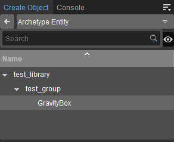
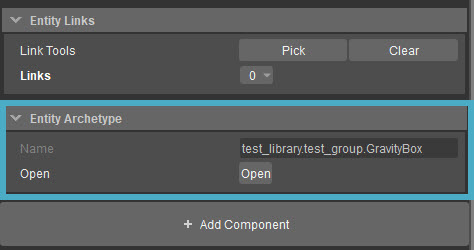
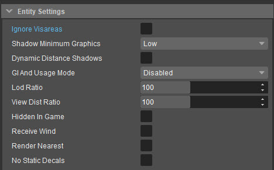

Overview
An Archetype Entity is based on a regular Entity and specifies individual parameter values for that Entity. If the value of an Archetype parameter is changed, all instances of that Archetype in the scene will be updated automatically.
Archetype Entities are organized in libraries which can be created in the DataBase View.
So technical level designers can predefine variations of Entity classes as Archetype Entities that can be used throughout the whole game. For global changes affecting all instances, the Archetype Entity just needs to be changed once in the Database View.
Search Bar
In the Search bar at the top, you can filter out any Archetype Entities by typing part of their name. The tool will then show you only the Archetype Entities and the groups they are in.

Preview
The button next to the Search bar toggles the preview of the Archetype Entity you have selected. This preview will be shown in the bottom part of the tool.
As shown in the image below, clicking Open will bring up the Legacy Material Editor where you can modify the parameters as well as the material properties of the archetype entity.

Archetype Entity Parameters
Archetype Entity Parameters are a basic set of parameters shared by all Archetype Entities.

Parameter | Description |
|---|---|
Ignore Visareas | When set, the object will not be rendered when inside a visarea. |
Shadow Minimum Graphics | When set, the object will cast a shadow based on the minimum graphics setting. |
| Dynamic Distance Shadows | Enables the Dynamic Distance Shadows. For more information, see Cached Shadows. |
| GI And Usage Mode | Defines the GI mode that would be assigned to the entity. |
Lod Ratio | Defines how far from the current camera position, the different Level Of Detail models for the object are used. |
View Dist Ratio | Defines how far from the current camera position, the the object can be seen. |
Hidden In Game | When set, this object is not shown in the game mode. |
Receive Wind | When set, this object will be influenced by any wind setup in the level. |
RenderNearest | Used to eliminate z-buffer artifacts when rendering from first person view. |
No Static Decals | When this option is set, decals will not project onto the object. |